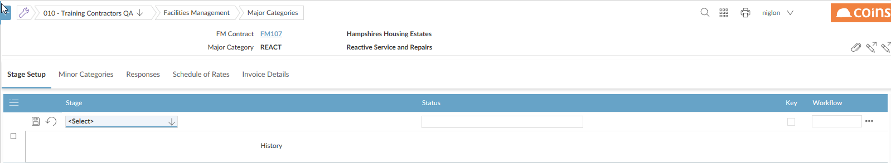
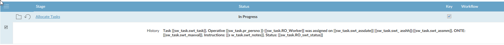

Not all jobs will have all the stages and therefore you would select only the ones that follow the progress of the job from start to completion and the last one is “Job Closed”. This ensures that no more tasks or actions can be added to that specific job.
To set up stages:
- On the Stage Setup tab, click
 to add a new stage.
to add a new stage.

- You must add stages in the order you want them to occur. You must have Add
- Select the Stage Type and enter text for the status you want the stage to set the
NOTE
Not all stages need to change the status. For example, you may not want to change the status of the - Choose whether this stage appears on the key stages screen. This will also be displayed on any reports and enquiries when doing the various stages
- Click
 to save the stage.
to save the stage.
Each stage has a default comment that will be added to the history when that stage occurs. You can change this text.
To change the history text:
- Click
 next to the stage.
next to the stage. - Change the text in the History field.
To include the value of a field from the database, include the field name in double square brackets. For example, to include the major category code, enter [[sw_job.sma_majcat]]. You can use the Database
History Text Example

- Click to save the stage.
After you have set up all the stages for the major category, you need to set the rules for the relationships between the different stages. For example, before 'Confirming All Tasks Are Complete', you have to first 'Confirm All Tasks Have Been Planned'.